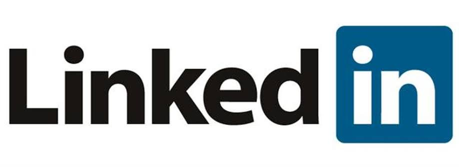

Visitantes:
Como a internet surgiu?
Antes de falamos do surgimento da internet devemos entende de como ela foi surgida e criada antigamente.
A criação da internet é uma história fascinante e muita complexa, que envolve várias pessoas e eventos. Vou contar brevemente como a internet surgiu:
Nos anos 1960, o Departamento de Defesa dos Estados Unidos estava procurando maneiras de melhorar as comunicações entre seus diversos departamentos e agências entres os computadores instalados para caso de perda de dados pois os Americanos temiam que seu Computador Central que ficava no Pentágono em Washington fosse atacado por mísseis, então as informações foram distribuídas entre outros locais por meio de cabos subterrâneos. Foi então que a Agência de Projetos de Pesquisa Avançada (ARPA) desenvolveu um projeto chamado ARPANET, que era uma rede de computadores interligados que poderiam trocar informações entre as agências.
A pesquisa foi financiada pela Nasa e pelo Pentágono, tinha como objetivo criar uma rede que fosse capaz de armazenar dados e resistir a uma destruição parcial – caso houvesse, por exemplo, um ataque nuclear. O primeiro teste da ARPANET ocorreu no ano 1969, quando duas universidades da Califórnia enviou um primeiro e-mail para as instituições parceiras perguntando: “Você está recebendo isso?” se conectaram através da rede. Ao longo da década de 1970, a ARPANET foi expandida para incluir mais universidades e instituições de pesquisa.
Em 1983, a ARPANET mudou para um novo protocolo de comunicação chamado TCP/IP, que permitia que diferentes redes de computadores se comunicassem entre si. Esse protocolo se tornou a base da internet moderna.
Na década de 1990, a internet começou a se expandir rapidamente, à medida que mais empresas, organizações e indivíduos começaram a usar a rede para compartilhar informações, fazer negócios e se comunicar. A World Wide Web (WWW), que é uma coleção de documentos interconectados, tornou-se uma parte importante da internet nessa época.
Já em 1992 apareceram as primeiras empresas provedoras de internet comercial. No Brasil, em 1989 algumas universidades federais tinham acesso à rede, mas somente em 1995 começou a exploração comercial.
O surgimento da internet entre as pessoas.
Hoje, a internet é uma parte vital da vida moderna e mudou a forma como vivemos, trabalhamos e nos comunicamos. A partir de uma rede de computadores interligados para fins militares, a internet se tornou uma das maiores conquistas tecnológicas da humanidade.
As primeiras redes sociais foram criadas no final dos anos 1990 e início dos anos 2000, e eram bastante diferentes das redes sociais que conhecemos hoje. Elas surgiram como uma forma de conectar pessoas com interesses comuns e permitir que elas compartilhassem informações e experiências.
Uma das primeiras redes sociais a surgir foi o Six Degrees, criado em 1997, que permitia que os usuários criassem perfis e se conectassem com amigos e colegas de trabalho. No entanto, essa rede social não teve um grande sucesso e acabou sendo encerrada em 2001.
Outra rede social pioneira foi o Friendster, criado em 2002, que permitia que os usuários criassem perfis, adicionassem amigos e compartilhassem fotos e mensagens. O Friendster teve um grande sucesso na Ásia, mas acabou perdendo espaço para o Facebook, que surgiu em 2004.
 O Facebook foi criado por Mark Zuckerberg como uma rede social exclusiva para estudantes universitários, mas acabou sendo aberta ao público em geral em 2006. O Facebook revolucionou as redes sociais ao permitir que os usuários se conectassem com amigos, familiares e colegas de trabalho em todo o mundo, criassem grupos com interesses comuns e compartilhassem fotos, vídeos e mensagens.
O Facebook foi criado por Mark Zuckerberg como uma rede social exclusiva para estudantes universitários, mas acabou sendo aberta ao público em geral em 2006. O Facebook revolucionou as redes sociais ao permitir que os usuários se conectassem com amigos, familiares e colegas de trabalho em todo o mundo, criassem grupos com interesses comuns e compartilhassem fotos, vídeos e mensagens.
Outras redes sociais que surgiram na mesma época incluem o MySpace, que permitia que os usuários personalizassem seus perfis com músicas e vídeos, e o LinkedIn, que se tornou uma rede social profissional para conectar profissionais de diversas áreas.
As primeiras redes sociais eram bastante simples em comparação com as redes sociais de hoje, mas foram um passo importante na evolução da comunicação e da interação social online. Elas permitiram que as pessoas se conectassem e compartilhassem informações de maneira mais fácil e rápida, criando novas formas de relacionamento e comunicação que transformaram a forma como as pessoas se conectam hoje em dia nos dias de hoje e futuras.
Entrevistar com alunos da Johnson.
Pedro Henrique Castro 2°B
De diversas formas, independentemente da pessoa que for usuário com o hábito de acessar todos os dias, isso nos ajuda muito em várias demandas. Simplesmente com uma pesquisa rápida e informações simples, que não demandam muito tempo, basta um clique para ter acesso.